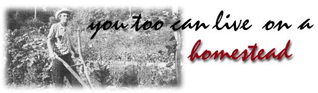

Issue No. 29 - September/October 1974
It ain't always easy wringing a
living out of a two-acre
homestead the way Ivory and
Belle Marshall have done . . .
but just try duplicating their
success in a big city apartment house!
My wife, Belle, and I live on a small homestead just outside the town of Hendersonville in western North Carolina. We bought the place 12 or 15 years ago, when I was still able to work in restaurant and hotel kitchens and cotton mills. During my off hours I'd haul sawdust, manure and leaves to put on my rundown soil, since I had the idea that crops could be raised intensively on our land as it's done in Europe. Also, we both suspected that chemicals might have caused my wife's cancer and were determined to raise our food without them.
Then, about two years ago, I was totally disabled with emphysema and came home to garden full time. My experience has given me some ideas I'd like to pass on to those who want to live off the land.
First-if I were going to homestead all over again-I'd try to find two or three acres in a secluded area, with a good spring or some other water supply. (Of course, a well can be hand dug. . . provided you don't hit rock so hard you can't go through.)
We bought a small cottage with our place, and I think this is a good idea because to build and furnish a house is rather expensive. If there is no dwelling on the land you want, then your next best bet is to look for a good used house trailer going cheap.
Otherwise, your homestead doesn't need elaborate buildings. Scrap lumber available at dumps can be converted into a barn and chicken coop (or you can find an old building to tear down for a low price or nothing at all). If you live near a railroad you can get old ties that have been replaced. These make good framing for a root cellar, since they've been creosoted and will last for several years underground.
I'd advise putting a woven wire fence around your property. Then if an animal gets out of the pen it won't go over into somebody's field . . . nor will your neighbors' stock get into your place and destroy your crops. I have such a fence, five feet high, around my own land and have set rose bushes, dogwood and other flowering shrubs against it. This provides a certain amount of privacy and a lot of space for birds to nest.
The first thing you'll need to do in the spring is to get the garden in. Almost any farmer will plow and harrow your land for much less than it would cost you to keep a horse or tractor, and having a small place ensures that you can get the job done early.
My first year I tried to garden with a rototiller but found that my lung condition wouldn't permit it. (Belle has had surgery that keeps her from strenuous work.) Instead, I used large farm tractor to turn and disc the land and lay off the first rows. Then I got out the low-wheel push plow and started on the planting. (Incidentally, this device is also a good cultivating tool. It will go closer to the plants without damage than a motorized plow, and cuts the hoeing to a minimum. I find too, that a garden wheelbarrow is almost a must . . . saves of backaches and sore arms.)
The gardening system I use is one of close cultivation. the average farmer makes his rows about four feet apart, I space mine about two feet and sow a quick-maturing vegetable grain in every other one. This automatically doubles my acreage to begin with . . . and by removing spent crops as as soon as they mature and planting something else in their place, I get eight acres' worth of production from the original two.
We raise enough vegetables for home use and have a surplus to sell at the Curb Market in Hendersonville. If you do like wise, by the way, you'll need plenty of jars in which to can your produce. After your first harvest you should have 600 to 800 containers of food put away, besides enough last until next season.
A berry crop is also a must. Red raspberries yields two crops a year around here and can be cultivated simply by running a lawnmower between the rows every two weeks or so. We put out 17 rows five years ago, pick three times a week in season and get an average yield of 24 quarts per picking. My wife sells the berries at the Curb Market for $1.00 a quart and gets of orders in excess of our supply. A strawberry bed about 20 feet wide across an acre of ground will give you lots of fruit to preserve and freeze . . . even some to sell.
Four years ago I set out 25 Concord grapevines, and last season we sold $15.00 worth of grapes. (By the way, heavy telephone wire from the dump makes a good trellis, and same stuff is good support for pole beans.)
Field corn is planted in every corner and patch of my that isn't taken up by vegetables . . . a practice I recommend to anyone who wants to keep livestock. When the corn is mature you can cut the tops, tie them in bundles and stack them in shocks to dry. Also pull the blade fodder and bundle it in the same way.
In your spare time, get scrap lumber and build a small barn (with a loft for the roughage and corn shucks, since you'll probably have 500 to 1,000 bunches). You can find old barrels around factories for a very small price, cut one end out of each and store your corn in these containers to keep the rats out.
Be sure to set about 1,000 sweet potatoes. When they're mature, cut the tops off and put them on a tripod rick to dry. Then haul them to the barn and store them in the loft.
In between Irish potato rows you can plant hybrid millet . . . which can be cut about three times during the summer and shocked up to dry like the corn tops. This should give you enough dry feed to keep a goat until another crop comes in.
By all means plant a cover crop when harvest is over, to make your land more fertile for next year. Rye or rape sown at this time gives you grazing for chickens and a cow or goat for most of the winter (in our area, anyway).
About livestock: At one time we kept three or four goats for our milk supply, but I was forced to get rid of the critters after one of my lungs collapsed and I could no longer tend them. We now keep 20 to 25 laying hens and two dogs . . . also two rabbits and one pig, which take care of weeds and cull produce and convert it into the best fertilizer obtainable.
All the same, I wouldn't advise a newcomer to buy livestock until one crop has been gathered and you can estimate how much feed you have on hand. There's nothing more discouraging than to have a bunch of animals around and then run out of rations for them.
You can start with chickens in the early spring by buying 25 pullets at your neighborhood farm supply store and putting them in a brooder. I recommend a heavy breed so that the hens will be broody next season and you can hatch your own eggs for following years. A small house about 8 by 10 feet will accommodate 25 or 30 of the birds, and you can let them run in the same lot with the goat.
By your second spring you'll want a pig for home use. (There should be some corn left in the barrels to feed it.) Keep the animal in a good tight pen at the back of the barn, and cut a hole in the barn wall so you can put the feed through and stay dry yourself.
All this should keep you busy through the summer months. Winter on the homestead is a good time to pick up odd jobs, build more onto your barn, fix up a workshop to repair your tools, etc.
If you can find a sawmill nearby, your heating problem shouldn't be too bad. Summer-when other people aren't rush ing for wood or sawdust-is the time to lay in your fuel and bedding. A bow saw is handy for cutting discarded mill slabs into firewood.
If you can rake up about $100 to spend for a small chain saw, you'll have your fuel supply cornered. Farmers who have cut trees to make lumber will often give you the lops and limbs if you cut them up. Here's where your pickup comes in handy . . . but if you don't have a truck, a small trailer is very useful.
Whatever kind of vehicle you have, it should be small (gasoline is expensive). Even so, you'll still have to lay out money for fuel, insurance, tags, tires, etc. If you have no health problems you can get by with a bicycle for transportation . . . but there's no getting around the need for some kind of cash income.
In our case, a pension of less than $200 a month barely covers lights, phone. gas, etc. In order to have food, we must raise it. I handle that end of the homestead, and Mrs. Marshall makes aprons and dried flower arrangements-over $500 worth last year-to sell at the Curb Market along with surplus crops and eggs.
If man and wife work as a team, it's possible to supplement your income in various ways. For example, the woman can take care of the garden while the man picks up a few extra dollars helping other farmers prune apple trees, plow and plant, string pole beans or pick apples. Or he might buy a few baskets of beans, cabbage and corn and go out with the truck to nearby towns to retail the produce to householders. I've peddled apples this way, or maybe traded for fruit jars, chickens, a pig or an old plow.
If you have a power mower, you can pick up extra money cutting grass . . . and when the leaves begin to fall, people in town will pay you to rake their yards. (Haul the accumulation home and put- it on the compost pile.)
Some folks will also hire you to clean out a garage, basement or attic, and will be glad to have you take away the contents. What better place to get usable furniture and dishes . . . even antiques? There's always a sale barn where you can get a few bucks for your treasures.
Needless to say, you won't get rich living on a couple of acres . . . and it can't be done at all unless you have the guts to do some real work. Homesteading gets hot and hard before the summer's over.
|
 It ain't always easy wringing a living out of a two-acre homestead the way Ivory and Belle Marshall have done . . . but just try duplicating their success in a big city apartment house! |
|
|